DELT

Cadastrar
Entrar


Política de privacidade
Como o Projeto Delta cuida dos seus dados, com transparência e em conformidade com a LGPD.
Resumo rápido: coletamos apenas os dados necessários para monitorar seu consumo de água, enviar alertas e gerar previsões. Não vendemos seus dados. Você pode pedir acesso, correção ou exclusão a qualquer momento.
Última atualização: 21 de outubro de 2026.
Índice
1. Quem somos (controlador)
O Projeto Delta, desenvolvido por estudantes do Instituto J&F, é o controlador dos dados pessoais tratados nesta plataforma, nos termos da Lei Geral de Proteção de Dados (LGPD, Lei nº 13.709/2018).
Contato do controlador: contato@projetodelta.com.
2. Dados que coletamos
| Categoria | Exemplos | Origem |
|---|---|---|
| Cadastro | Nome, e-mail, senha (armazenada de forma criptografada), telefone (se informado) | Fornecidos por você |
| Imóvel e hidrômetro | Endereço de instalação, identificação do hidrômetro e do dispositivo IoT | Fornecidos por você ou pela equipe de instalação |
| Consumo de água | Leituras de vazão e volume, histórico, metas, alertas gerados | Dispositivo IoT instalado no hidrômetro |
| Uso da plataforma | Conversas com o chatbot, preferências, ações realizadas na conta | Geradas ao usar o serviço |
| Dados técnicos | Endereço IP, tipo de navegador e dispositivo, data e hora de acesso, cookies | Coletados automaticamente |
Não coletamos dados pessoais sensíveis (como saúde, religião ou origem racial). Pedimos que você também não os insira nas conversas com o chatbot.
3. Para que usamos e bases legais
| Finalidade | Base legal (LGPD, art. 7º) |
|---|---|
| Criar e gerenciar sua conta e prestar o serviço de monitoramento | Execução de contrato |
| Enviar alertas de vazamento e consumo anormal, gerar previsões e relatórios | Execução de contrato |
| Responder dúvidas pelo chatbot e pelo suporte | Execução de contrato |
| Manter a segurança, prevenir fraudes e abusos | Legítimo interesse |
| Melhorar a plataforma e os modelos de previsão com dados estatísticos e, sempre que possível, anonimizados | Legítimo interesse |
| Cookies de análise e comunicações opcionais (novidades e dicas de economia) | Consentimento (que você pode revogar a qualquer momento) |
| Cumprir obrigações legais ou ordens de autoridades | Obrigação legal ou regulatória |
4. Compartilhamento
Não vendemos seus dados pessoais. Podemos compartilhá-los apenas quando necessário, com:
5. Inteligência artificial
Usamos inteligência artificial para prever consumo e custos, detectar anomalias e responder no chatbot. Esse tratamento é feito para prestar o serviço contratado. As previsões e alertas não geram decisões jurídicas ou que afetem seus direitos, e você pode pedir explicações e revisão sobre como seus dados foram usados, conforme o art. 20 da LGPD.
6. Cookies
Usamos cookies e tecnologias semelhantes para o funcionamento da plataforma e, com o seu consentimento, para entender como ela é utilizada.
Você pode gerenciar ou bloquear cookies nas configurações do seu navegador, mas isso pode afetar o funcionamento de algumas funcionalidades.
7. Por quanto tempo guardamos
8. Segurança
Adotamos medidas técnicas e organizacionais para proteger seus dados contra acessos não autorizados, perda, alteração ou divulgação indevida, como:
Nenhum sistema é totalmente livre de falhas. Se ocorrer um incidente de segurança que possa causar risco ou dano relevante, avisaremos você e a ANPD, conforme a LGPD.
9. Seus direitos
Conforme o art. 18 da LGPD, você pode solicitar a qualquer momento:
Para exercer seus direitos, escreva para contato@projetodelta.com. Responderemos em até 15 dias. Você também pode reclamar à ANPD (gov.br/anpd).
10. Crianças e adolescentes
A plataforma é destinada a maiores de 18 anos. Não coletamos intencionalmente dados de crianças e adolescentes. Se você acredita que um menor nos forneceu dados, entre em contato para que possamos excluí-los.
11. Transferência internacional
Alguns prestadores de serviço, como os de hospedagem em nuvem, podem armazenar ou processar dados em servidores fora do Brasil. Nesses casos, a transferência só é feita para países ou empresas que ofereçam grau de proteção compatível com a LGPD, com as garantias previstas em lei (art. 33), e sempre sob contrato.
12. Alterações nesta política
Podemos atualizar esta política periodicamente. Mudanças relevantes serão comunicadas por e-mail ou na plataforma, e a data da última atualização ficará sempre no topo desta página.
13. Contato e encarregado (DPO)
Para dúvidas, solicitações ou reclamações sobre privacidade, fale com o nosso encarregado pelo tratamento de dados pessoais:
Veja também os nossos Termos de Uso.


© 2026 Projeto Delta. Todos os direitos reservados.